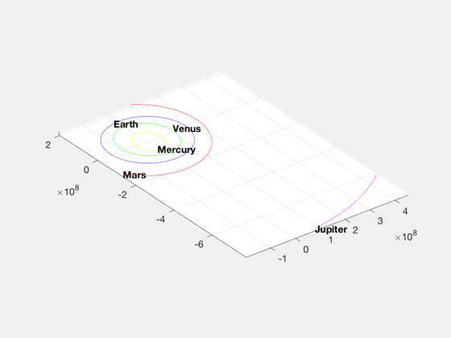
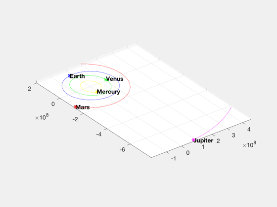
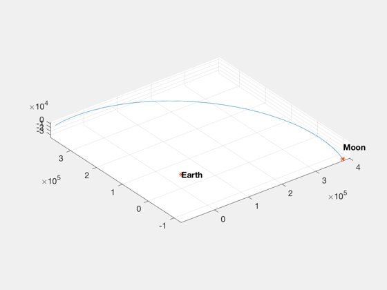

Demonstrate JPL ephemeris for the solar system.
There are two functions, SolarSysJPL for inputing a time vector and PlanetPosJPL for getting the state at a specific time.
------------------------------------------------------------------------ See also SolarSysJPL, PlanetPosJPL, NewFig, TextS, Date2JD, JDToDateString, InterpolateState ------------------------------------------------------------------------
Contents
%-------------------------------------------------------------------------- % Copyright (c) 2007,2019 Princeton Satellite Systems, Inc. % All rights reserved. %-------------------------------------------------------------------------- % Since version 7. % 2019.1 Fixed SolarSysJPL demo and generated more points for th emoon %-------------------------------------------------------------------------- id = [1 2 3 4 5 10]; jD0 = Date2JD;
Demonstrate SolarSysJPL: planet positions over a time period
%------------------------------------------------------------- tPlot = jD0+linspace(0,365,1000); InterpolateState([],[],'bin2000.405'); PlanetPosJPL( 'initialize', id ); [xP, yP, zP] = SolarSysJPL( id, tPlot, 1 ); NewFig('Planets Trajectory'); s = JDToDateString( jD0 ); title(s) plot3(xP(1,:)',yP(1,:)',zP(1,:)','y',... xP(2,:)',yP(2,:)',zP(2,:)','g',... xP(3,:)',yP(3,:)',zP(3,:)','b',... xP(4,:)',yP(4,:)',zP(4,:)','r',... xP(5,:)',yP(5,:)',zP(5,:)','m') TextS(xP(1:5,1)',yP(1:5,1)',char({'Mercury','Venus','Earth','Mars','Jupiter'})) grid on; axis equal;
Demonstrate PlanetPosJPL: planet positions at a specific time
%-------------------------------------------------------------- rP = PlanetPosJPL( 'update', jD0, 1 ); hold on plot3(rP(1,1),rP(2,1),rP(3,1),'y*',... rP(1,2),rP(2,2),rP(3,2),'g*',... rP(1,3),rP(2,3),rP(3,3),'b*',... rP(1,4),rP(2,4),rP(3,4),'r*',... rP(1,5),rP(2,5),rP(3,5),'m*')
Plot the moon separately (geocentric)
%-------------------------------------- NewFig('Geocentric Moon Trajectory'); plot3(xP(end,1:28)',yP(end,1:28)',zP(end,1:28)') grid on; axis equal; hold on plot3([rP(1,6) 0],[rP(2,6) 0],[rP(3,6) 0],'*') TextS([rP(1,6) 0],[rP(2,6) 0],char({'Moon','Earth'})) grid on; axis equal; %--------------------------------------